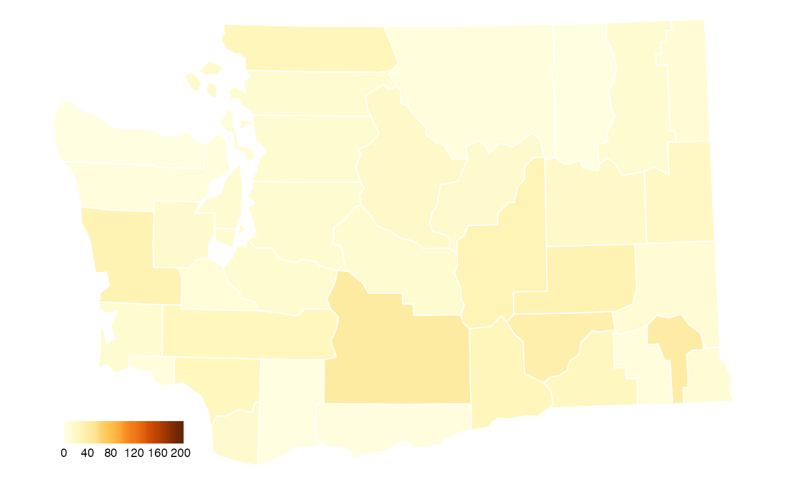
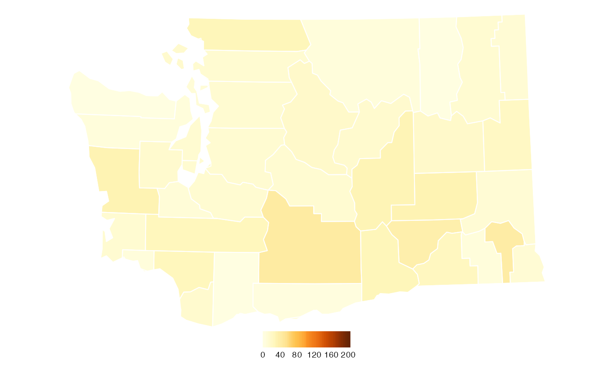
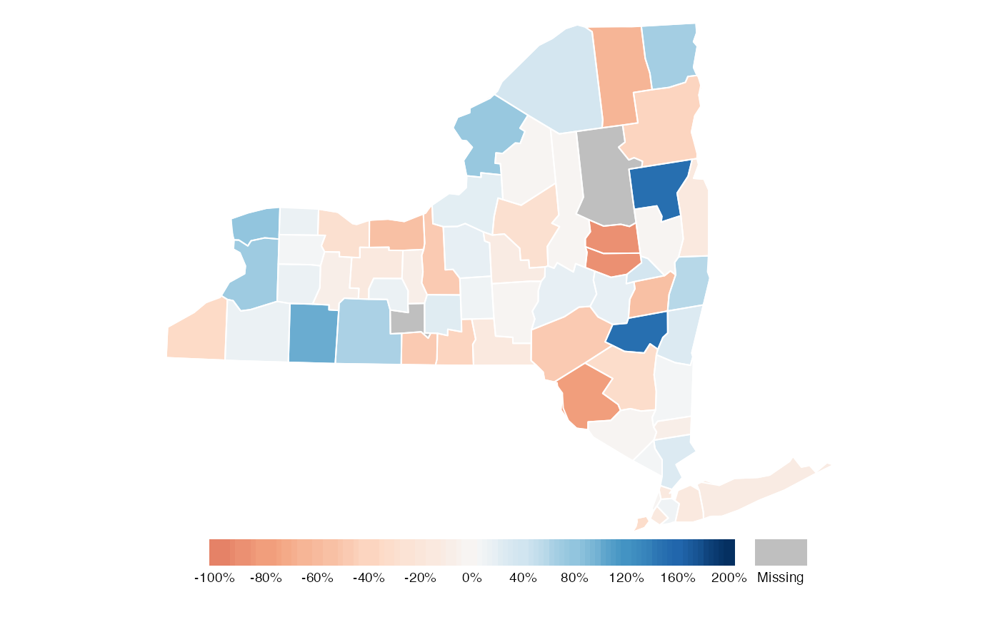

Opportunity Insights
Eli Grosman, Mazama Science
February 9, 2020
Source:vignettes/articles/Opportunity_Insights.Rmd
Opportunity_Insights.RmdObjective
The goal of this document is to illustrate how MazamaSpatialPlots can be used to easily recreate state or county level choropleth maps found on the web.
Throughout this document, we will be using data provided by Opportunity Insights; specifically, the data used on their Economic Tracker web app.
Obtaining Data
All of the data we will use is easily obtainable from the Oportunity Insights GitHub repository. We can use read.csv() to load data directly.
# COVID data by US county URL1 <- "https://raw.githubusercontent.com/OpportunityInsights/EconomicTracker/main/data/COVID%20-%20County%20-%20Daily.csv" URL2 <- "https://raw.githubusercontent.com/OpportunityInsights/EconomicTracker/main/data/Zearn%20-%20County%20-%20Weekly.csv" countyCovid <- readr::read_csv(URL1, col_types = cols()) countyMath <- readr::read_csv(URL2, col_types = cols())
head(countyCovid)
## # A tibble: 6 x 12
## year month day countyfips case_count death_count case_rate death_rate
## <dbl> <dbl> <dbl> <dbl> <dbl> <dbl> <dbl> <dbl>
## 1 2020 1 21 1001 0 0 0 0
## 2 2020 1 21 1003 0 0 0 0
## 3 2020 1 21 1005 0 0 0 0
## 4 2020 1 21 1007 0 0 0 0
## 5 2020 1 21 1009 0 0 0 0
## 6 2020 1 21 1011 0 0 0 0
## # … with 4 more variables: new_case_rate <chr>, new_death_rate <chr>,
## # new_case_count <chr>, new_death_count <chr>head(countyMath)
## # A tibble: 6 x 9
## countyfips year month day_endofweek engagement badges break_engagement
## <dbl> <dbl> <dbl> <dbl> <chr> <chr> <chr>
## 1 1003 2019 1 13 -.159 -.165 .
## 2 1003 2019 1 20 -.191 -.248 .
## 3 1003 2019 1 27 -.404 -.458 .
## 4 1003 2019 2 3 .388 .125 .
## 5 1003 2019 2 10 .35 .395 .
## 6 1003 2019 2 17 .354 .609 .
## # … with 2 more variables: break_badges <chr>, imputed_from_cz <dbl>Map 1: COVID Cases in Washington Counties
The first map we will recreate is the map of new cases in Washington state (by county). We define new cases to be a 7-day rolling average of confirmed cases of COVID-19 per 100k residents.
This is the map displayed on Opportunity Insights’ economic tracker:

Using just the basic functionality MazamaSpatialPlots’s countyMap() function, we can make a map that almost perfectly matches the original map:
mapDate <- lubridate::parse_date_time("2021 02 09", "y m d", tz = "UTC") # column 'new_case_rate' is the confirmed covid cases per 100k residents, 7-day rolling average countyCovid_formatted <- countyCovid %>% mutate( date = lubridate::parse_date_time(paste(year, month, day), "y m d", tz = "UTC"), countyFIPS = stringr::str_pad(countyfips, width = 5, pad = "0"), stateCode = US_stateFIPSToCode(substr(countyFIPS, 0, 2)), new_case_rate = as.numeric(new_case_rate)) %>% filter(date == mapDate) %>% group_by(countyFIPS) %>% mutate(meanCaseRate = mean(new_case_rate, na.rm = TRUE)) %>% select(countyFIPS, stateCode, meanCaseRate) countyMap( data = countyCovid_formatted, parameter = "meanCaseRate", stateCode = "WA", breaks = seq(0, 200, 40), palette = "YlOrRd", style = "cont", # continuous color scale legendOrientation = "horizontal", legendTitle = "", stateBorderColor = "white" )

Now, the only difference between the map created with countyMap() and the original is the position of the legend. We can add adjust this manually using functions provided by tmap.
countyMap( data = countyCovid_formatted, parameter = "meanCaseRate", stateCode = "WA", breaks = seq(0, 200, 40), palette = "YlOrRd", style = "cont", legendOrientation = "horizontal", legendTitle = "", stateBorderColor = "white" ) + tmap::tm_layout( legend.position = c("center", "bottom"), legend.outside = TRUE, legend.outside.position = "bottom", legend.outside.size = 0.1 )

From this map we can see that the average amount of new COVID-19 cases in Washington State appear to be somewhat consistent across the state. However, counties in the south-east tend to have a higher amount of new cases than others.
Map 2: Student Math Participation in New York Counties
The next map we will recreate is the map of change in student participation in Math in the state of New York (by county) aggregated at the end of the week. This is the map displayed on Opportunity Insights’ economic tracker:
Like before, we can use just the basic functionality MazamaSpatialPlots’s countyMap() function to make a map that almost perfectly matches the original map. One aspect that countyMap() isn’t able to replicate is the color pallete used by Opportunity Insights. It appears to be some darker variation of the Spectral pallete provided by RColorBrewer but we were unable to find an exact match.
mapDate <- lubridate::parse_date_time("2021 02 07", "y m d", tz = "UTC") countyMath_formatted <- countyMath %>% mutate( date = lubridate::parse_date_time(paste(year, month, day_endofweek), "y m d", tz = "UTC"), countyFIPS = stringr::str_pad(countyfips, width = 5, pad = "0"), stateCode = US_stateFIPSToCode(substr(countyFIPS, 0, 2)), engagement = as.numeric(engagement) * 100.0) %>% dplyr::filter(date == mapDate) countyMap( data = countyMath_formatted, parameter = "engagement", stateCode = "NY", breaks = c(seq(-100, 0, 20), seq(40, 200, 40)), palette = "Spectral", style = "cont", legendOrientation = "horizontal", legendTitle = "", stateBorderColor = "white" )

Similarly to the previous example, we can adjust the position of the map manually by using tmap. We can also add the percent (%) symbol at the end of each label in the legend.
breaks = c(seq(-100, 0, 20), seq(40, 200, 40)) countyMap( data = countyMath_formatted, parameter = "engagement", stateCode = "NY", breaks = breaks, palette = "Spectral", style = "cont", legendOrientation = "horizontal", legendTitle = "", stateBorderColor = "white" ) + tmap::tm_layout( legend.position = c("center", "bottom"), legend.outside = TRUE, legend.outside.position = "bottom", legend.format = list(fun = function(x) paste0(x, "%")), legend.outside.size = 0.1 )

From this map one could conclude that in general, the percent change varies across the state but tends to be low. There are some counties that had an slight increase in participation and some that had a slight decrease. However, some counties, especially some in the west, saw a great increase in participation while some others saw a great decrease.